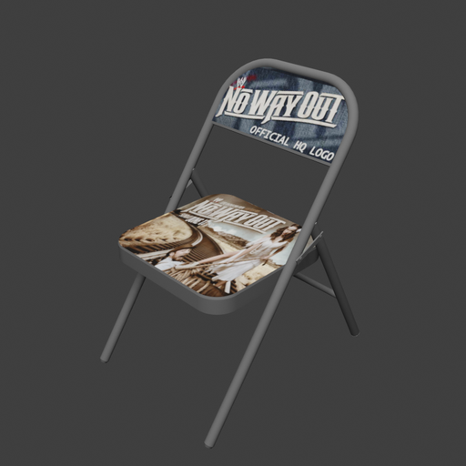
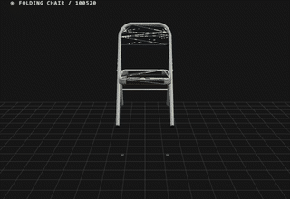
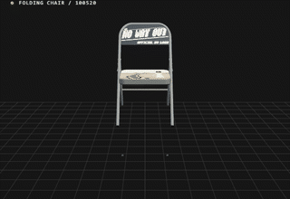
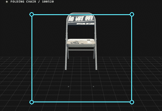
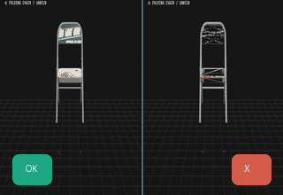

NeoWorld3
NeoWorld3NeoWorld-3 · research
Worlds robots can use, not just look at.
NeoWorld-3 turns photos into simulation-ready 3D worlds. Coding agents write every object as a program, with parts, joints and limits.
Scene 01 · reconstructed coffee corner
move the pointer · scroll to turn
The idea
A movie set is not a house.
AI grew fast by learning from huge amounts of data. Robots cannot do the same in the real world: every try is slow, costly, and sometimes breaks things. They need practice worlds, built from real places, where they can try millions of times.
A photo-realistic 3D scan looks like such a world, but it is a movie set. The cupboard is painted on. Nothing opens, nothing has weight, nothing can be pushed.
Embodied intelligence needs worlds it can interact with, not just worlds it can see.
Try it: the door on the right is a real NeoWorld-3 reconstruction (object 8994). Switch between the two ways of storing it and click.
Loading the door…
Real → sim → real
One loop from a photo to a robot and back.
1 · Observe
Start from what a camera sees.
A few photos or a short video of a real place, with the camera positions they were taken from.
2 · Reconstruct
Agents write the world as code.
Coding agents build each object as a program with parts, joints and limits, check it against the photos, and fix only what is wrong.
3 · Simulate & train
Drop it into a physics simulator.
Because every part has a shape, a joint and a collision surface, robots can push, open and grasp things, and practise at scale.
4 · Deploy
Carry the skill back to the real robot.
A plan rehearsed in the twin runs on the real machine. What the robot then sees becomes the next observation, and the loop starts again.
A world written as code
Keep the recipe, not just the cake.
Most 3D methods predict a finished surface in one step. NeoWorld-3 keeps something more useful: the program that builds the object. Change one number in it and every part that depends on that number follows.
P = (S, θ, T)
The result is exported as URDF, the standard file robots and simulators read: links, joints, axes and limits. Drag the divider over the chair below to look underneath its surface.
The joint text is read live from 100520.urdf. The limits are the real ones: the seat folds from 0° to −90°.
How the agent builds
The model proposes. The harness admits.
A vision-language agent does the building. Through NeoMCP it can measure the photos, write and run modelling code, render from the real camera positions, and compare. NeoSDK supplies the geometry, rendering and optimisation tools underneath.
For a whole scene, one coordinating agent keeps the room consistent and hands single objects to specialist agents. A returned object is merged only if it is no worse than what it replaces, and nothing else moved.





not better? → return to Audit with the reason
Five design rules the system follows. They come from unpublished material and will appear here once it is public.
Reasoning meets gradients
The agent sketches. The optimiser measures.
Language models are good at structure (“a chair with four legs and a tilted back”) but poor at exact numbers. So NeoWorld-3 splits the work. The agent writes the program; an optimiser then tunes its named knobs until renders match the photos.
Because the optimiser moves a few meaningful knobs rather than thousands of points, one leg_length keeps all four legs equal.
A small illustration running in your browser: a search over 4 knobs against one silhouette, keeping a change only when the overlap clearly improves. It shows the idea; it is not a NeoWorld-3 run.
Physical validity
Pretty is not the same as solid.
A render hides problems that physics finds at once: open holes, faces glued together wrongly, parts that pass through each other when they move. NeoWorld-3 checks the mesh directly by counting how many faces meet at every edge.
Repair is deliberately narrow: where two seams clearly coincide, it reconnects them without moving any vertex, then checks again. It fills no holes and never merges parts that move separately.
Joints get their own test. Each declared joint is swept through its range to see whether parts collide, detach or leave their parent.
An interactive switch showing what happens when this check is turned off. It uses unpublished results.
From capture to scene
A coffee corner, rebuilt part by part.
Three layers of the same office coffee corner. On the left, the stabilised video. In the middle, the scene NeoWorld Studio rebuilt from it, rendered from the same camera. On the right, what the rebuilt scene really is: code.
The two pictures can look alike. The difference is underneath. The code layer shows the scene's real construction record, the operations and measurements that build each part. Drag the </> divider to see more of it.
In The Matrix, Neo learns to see his world as code. This is the same idea, made literal.
Articulated objects
Ten objects. Every joint explicit.
Each object below was rebuilt from a single image, shown on the left. Every moving part has a declared joint type, axis and range. Play the motion, colour the parts, or show the joint axes.

Scissors · 10449
Kinematic viewer: joints move within their URDF limits. It shows motion, not a physics simulation.
Evidence
What the benchmarks say.
Benchmark comparisons against other methods, shown as six small charts. They will appear here once the results are public.
Real → sim → real
Rehearse in the twin. Act in the real world.
A reconstructed world is only useful if a robot can act in it. The plan: rehearse a task in the rebuilt twin, then carry it out on the real robot, and feed what the robot sees back into the next reconstruction.
A real-robot experiment and an interactive explainer of how plans are checked before they run. Coming once the results are public.
Common questions
Why not just use…?
…3D Gaussian splatting or NeRF?
They produce beautiful views, but store no parts, joints or collision surfaces. There is nothing for a gripper to hold or a hinge to turn. It is the movie set from chapter 01.
…an image-to-3D generator?
Generators recover rich surface detail, but return a finished mesh. There is no construction left to edit, so you cannot lengthen one leg and have the others follow.
…a video world model?
Interactive video models draw the next frames from actions, but keep no lasting 3D state. Geometry can drift between frames and cannot be edited. NeoWorld-3 keeps an explicit program that every image is checked against.
…a simulation-asset generator?
Some tools output simulation-ready assets directly, but as finished products. If you disagree with how an object was split into parts, you cannot rewrite it. Here, the source program is the asset.
Honest limits
What it cannot do yet.
A short list of current limitations, taken from unpublished material.
Looking ahead
If every real-world observation can become a world a robot can practise in, the physical world becomes trainable.